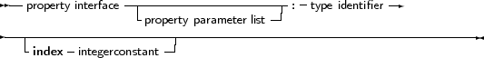

A global block can declare properties, just as they could be defined in a class. The difference is that the global property does not need a class instance: there is only 1 instance of this property. Other than that, a global property behaves like a class property. The read/write specifiers for the global property must also be regular procedures, not methods.
The concept of a global property is specific to Free Pascal, and does not exist in Delphi. ObjFPC mode is required to work with properties.
The concept of a global property can be used to ’hide’ the location of the value, or to calculate the value on the fly, or to check the values which are written to the property.
The declaration is as follows:
_________________________________________________________________________________________________________Properties

___________________________________________________________________
The following is an example:
{$mode objfpc}
unit testprop; Interface Function GetMyInt : Integer; Procedure SetMyInt(Value : Integer); Property MyProp : Integer Read GetMyInt Write SetMyInt; Implementation Uses sysutils; Var FMyInt : Integer; Function GetMyInt : Integer; begin Result:=FMyInt; end; Procedure SetMyInt(Value : Integer); begin If ((Value mod 2)=1) then Raise Exception.Create(’MyProp can only contain even value’); FMyInt:=Value; end; end. |
The read/write specifiers can be hidden by declaring them in another unit which must be in the uses clause of the unit. This can be used to hide the read/write access specifiers for programmers, just as if they were in a private section of a class (discussed below). For the previous example, this could look as follows:
{$mode objfpc}
unit testrw; Interface Function GetMyInt : Integer; Procedure SetMyInt(Value : Integer); Implementation Uses sysutils; Var FMyInt : Integer; Function GetMyInt : Integer; begin Result:=FMyInt; end; Procedure SetMyInt(Value : Integer); begin If ((Value mod 2)=1) then Raise Exception.Create(’Only even values are allowed’); FMyInt:=Value; end; end. |
The unit testprop would then look like:
{$mode objfpc}
unit testprop; Interface uses testrw; Property MyProp : Integer Read GetMyInt Write SetMyInt; Implementation end. |
More information about properties can be found in chapter 6, page 218.